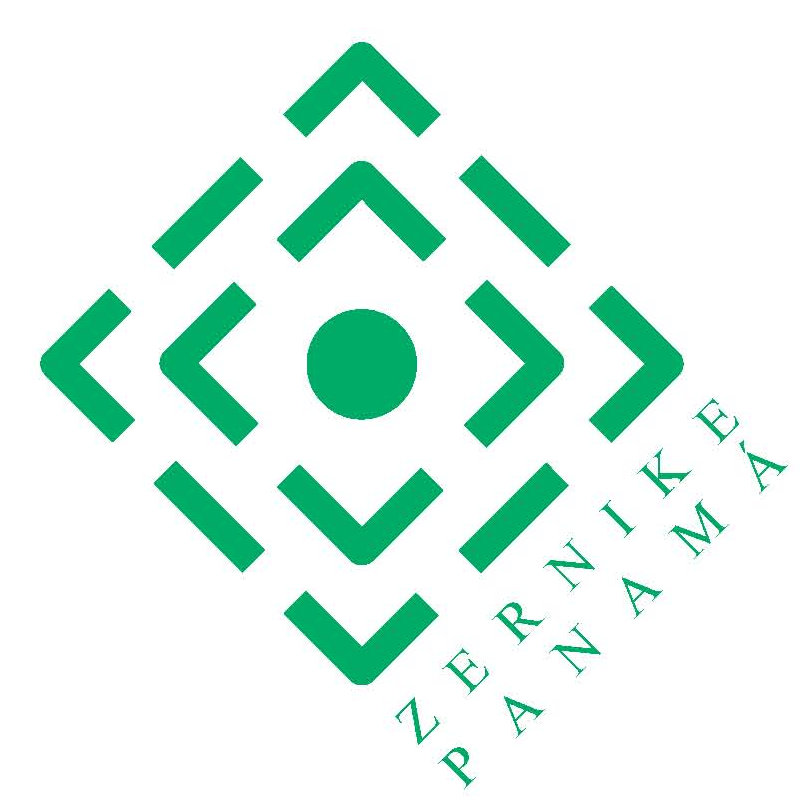
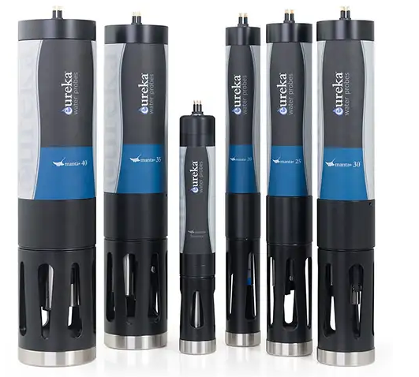
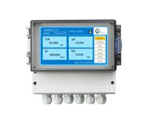

Zernike Panamá S.A.Instrumentos avanzados para el monitoreo ambiental y la medición simultánea de múltiples parámetros de calidad de agua en ríos, acuíferos y aplicaciones industriales.

Soluciones avanzadas para la medición en tiempo real de parámetros fisicoquímicos del agua en entornos naturales e industriales.
Ver productos
Sistemas automáticos de análisis para el control continuo de la calidad del agua en aplicaciones ambientales e industriales.
Ver productos